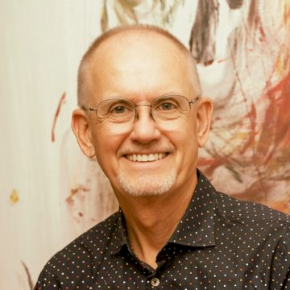
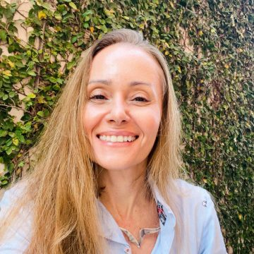

Retiro Presencial ACORDE
Imersão de 4 dias
O Retiro Presencial ACORDE é um mergulho profundo dedicado a quem deseja autoconhecimento, cura emocional e expansão da consciência.
Em um ambiente seguro, acolhedor e cuidadosamente conduzido, você é convidado(a) a desacelerar, olhar para o seu mundo interno e reconectar-se com a sua alma ou essência.
Durante o retiro, a combinação de abordagens terapêuticas inovadoras, práticas contemplativas e troca de experiências profundas cria um campo de cura e transformação.
Favorecemos a libertação de padrões limitadores e disfuncionais antigos, permitindo o despertar de novas possibilidades de ser e agir no mundo.
Cada vivência convida você a identificar e transformar aquilo que impede a expressão plena do seu Ser, alinhando quem você é com aquilo que deseja manifestar na vida.
Metodologias e Práticas
Triângulo do Drama
Amplia a consciência sobre os papéis reativos de Vítima, Perseguidor e Salvador, reduzindo jogos psicológicos e favorecendo relações mais autênticas e colaborativas.
Sistemas Familiares Internos (IFS)
Facilita o contato e a cura de feridas emocionais antigas, integrando partes internas em conflito e fortalecendo a autoliderança.
O Trabalho (The Work)
Permite investigar e dissolver crenças limitantes, abrindo espaço interno para a paz, clareza e liberdade de escolha.
Meditação Não-Dual
Cultiva a presença silenciosa, reduz o estresse e a ansiedade e reconecta com a dimensão essencial do ser.
Benefícios
Maior equilíbrio emocional e autorregulação do sistema nervoso, com redução de comportamentos reativos durante crises, conflitos e transições.
Aumento da autocompaixão e diminuição da autocrítica, o que favorece a autoconfiança e a busca de relacionamentos saudáveis.
Alinhamento crescente entre aquilo que é importante (valores e propósito) e a implementação de ações e decisões.
Mais clareza e coragem para estabelecer limites saudáveis de forma adulta e responsável.
Público-alvo
Pessoas que buscam transformar padrões emocionais e comportamentais disfuncionais, desenvolver a autoliderança e viver com mais autonomia, coragem e senso de propósito.
Para aqueles que estão passando por transições pessoais ou profissionais profundas que incluem: mudanças de ciclo, esgotamento físico e emocional (burnout), perdas pessoais ou profissionais desafiadoras, falta de sentido ou motivação na vida e/ou no trabalho.
Profissionais da área da saúde mental, educadores ou aqueles que atuam com treinamento e desenvolvimento de liderança e que desejam aprimorar suas práticas por meio de abordagens integrativas e inovadoras, aumentando os recursos internos gerados pela expansão de consciência.
Data
09, 10, 11 e 12 de Outubro de 2026
Local
Monte Crista Espaço de Vivência
Garuva - SC
https://montecrista.org
Facilitadores

Roberto Ziemer
É terapeuta, facilitador e consultor em desenvolvimento humano e organizacional, com mais de 40 anos de experiência apoiando pessoas, grupos e empresas em processos profundos de transformação.
Formado em Terapia Corporal Reichiana (José Ângelo Gaiarsa), Respiração Holotrópica (Stanislav Grof), Sistemas Familiares Internos/IFS (Dick Schwartz), O Trabalho (Byron Katie), Coaching Evolutivo (Richard Barrett), Gerenciamento da Transição (William Bridges), Coaching Sistêmico (ORSC) e Não-Dualidade (Rupert Spira). É Mestre em Psicologia Organizacional pela PUC, professor convidado de Autoliderança do programa de MBA ESALQ/USP, e autor dos livros “Mitos Organizacionais – O Poder Invisível na Vida das Empresas” e “Do Medo à Confiança – Como Realizar seu Projeto de Vida”. Atualmente se dedica a facilitação de retiros, jornadas online e programas que alinham autoconhecimento, cura integral e propósito de vida.

Luciana Elias
É psicóloga clínica e artista do corpo, com mais de 20 anos de experiência em facilitar processos de reconexão entre corpo, mente e expressão. Sua atuação integra Psicologia Analítica Junguiana, Psicologia Arquetípica e Arteterapia aplicada à dança e ao movimento. Como bailarina e pesquisadora do gesto, cria espaços de encontro e escuta criativa que favorecem o desenvolvimento do potencial expressivo e a autorrealização, promovendo um diálogo profundo entre corpo físico e essência.